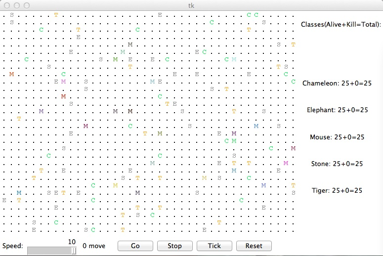

CSCI 150: PreLab 11
Critter
Tournament
Due
December
4th
at 9am
Reading
Read these two sci-fi short stories: The Nine Billion Names of God by Arthur C. Clarke, and The Last Question by Isaac Asimov.
This week you will write a set of classes that define the behaviour of various animals in a 2-dimensional grid world. Your animals will roam the world, and, should they happen upon another animal, will fight to the death. We will first describe some particular animals we want you to create, and then ask you to come up with an animal (or more) of your choosing.
Critter Summary
Before you start, let's take a look at this screenshot of the animal world, which is shown below.
What you see here is a grid with mice (labeled 'M'), stones (labeled 'S'), elephants (labeled 'E'), tigers (labeled 'T'), and chameleons (labeled 'C'). This is their initial placement in the grid world. The Go button starts the simulation; on each round of the simulation, each critter (stones count as critters here, albeit relatively uninteresting ones) is asked which direction it wants to move. On each round, each critter can move one square to the north, south, east, west, or stay at its current location. Critters move around in a world of finite size, but the world is toroidal, as it was in our game of life (going off the end to the right brings you back to the left and vice versa; going off the end to the top brings you back to the bottom and vice versa).
As the simulation runs, animals can collide by moving onto the same location. When two animals collide, they fight to the death. The winning animal survives and the losing animal is removed from the simulation. The following table summarizes the possible fighting choices each animal can make and which animal will win in each case. To help you remember which beats which, notice that the starting letters and win/loss ratings of "roar, pounce, scratch" correspond to those of "rock, paper, scissors." If the animals make the same choice, the winner is chosen at random.
| Critter #2 | ||||
|---|---|---|---|---|
| ROAR | POUNCE | SCRATCH | ||
| Critter #1 | ROAR | random winner | #2 wins | #1 wins |
| POUNCE | #1 wins | random winner | #2 wins | |
| SCRATCH | #2 wins | #1 wins | random winner | |
Critter Behaviour
Each critter you implement must have some specific state and functionality defined. In particular, each critter will implement the following methods, amongst other things:
def fight(self, oppInfo):
def getColor(self):
def getMove(self, info):
def getChar(self):
For example, a Stone may be implemented with the following functionality, where ROAR and CENTER are defined critter constants:
import critter
import color
class Stone(critter.Critter):
def fight(self, oppInfo):
return critter.ROAR # Stones always ROAR, obvi.
def getColor(self):
return color.GRAY # Stones are drawn GRAY
def getMove(self, info):
return critter.CENTER # Stones never move
def getChar(self):
return 'S' # Displayed with an 'S'
Critters To Implement
In your lab you will be implementing the following five critters, which must have the following behaviour:
Mouse
| fighting behaviour | always SCRATCH |
| movement behaviour | alternates between EAST and SOUTH in a zigzag pattern (first EAST, then SOUTH, then EAST, then SOUTH,...) |
| character | 'M' |
Tiger
| fighting behaviour | always ROAR |
| movement behaviour | moves 3 steps in a random direction from NORTH, SOUTH, EAST, or WEST, then chooses a new random direction from the same four and repeats |
| character | 'T' |
Elephant
| fighting behaviour | if opponent is a Tiger ('T'), then ROAR; otherwise POUNCE |
| movement behaviour | first go SOUTH steps times, then go WEST steps times, then go NORTH steps times, then go EAST steps times (a clockwise square pattern), then repeats |
| character | 'E' |
The Chameleon
| fighting behaviour | the strategy that beats the most used strategy against the chameleons so far (not just this one chameleon) |
| color | the color used by this particular chameleon's last opponent |
| movement behaviour | if the chameleons have lost the majority of their fights so far, then use avoidance. Otherwise, move towards opponents. |
| character | 'C' |
Your Own Critter
| fighting behaviour | you decide |
| movement behaviour | you decide |
| character | you decide |
You will decide the behaviour of your own critter. Your critter should be named after yourself. Please use your first name followed by your last initial. For example, my critter would be named CynthiaT.
What Should Your Critter Do?
Part of your lab grade will be based upon writing creative and non-trivial behaviour for your own critter. The following are some guidelines and hints about how to write an interesting critter.
When a critter moves, it has access to some important but limited information that it may wish to use to guide its movement behaviour. For example, it has access to its current x and y coordinates, as well as the width and height of the grid world. It can also find out what kind of critters are to its east, west, north, south, north-east, north-west, south-east, or south-west if there are any critter there at all. Note that you can see diagonally, but you cannot move diagonally (in one step).
One could imagine (unpleasantly) making a couple hundred if-statements to handle every possible configuration of neighbors. But we'd like to be a bit smarter (and more concise). One idea is this: make a variable for each of the four cardinal directions representing the "danger score" of moving in that direction, plus a danger score for not moving at all. For each neighbor you see, increase the danger scores in a way that represents the threat posed by that neighbor. Then pick the direction with the lowest danger score.
Give pseudocode that determines where such a critter should move based on its neighbours to the north, south, east, west, north-east, north-west, south-east, and south-west. In generating danger scores, the precise numbers you choose are up to you, but try to make sure they make lead to reasonable choices in various situations.
When a critter fights another critter (by both moving into the same square), you can find out the display character of the critter you are fighting against and adjust your strategy accordingly.
Your critter can use any character you like as its display character. In fact, critters are asked what display character to use on each round of the simulation, so you can have a critter that displays itself differently over time.
Your critter does not have to play a fixed strategy against each type of critter; you can have a critter that learns its strategy over time, based on its previous fighting results. For example, if critter has fought with a Tiger three times, and the Tiger always Pounces, then the next time it encounters a Tiger, it would seem that Scratching may be a good fighting strategy.
Honor Code
If you followed the Honor Code in this assignment, write the following sentence attesting to the fact at the top of your homework.
I affirm that I have adhered to the Honor Code in this assignment.